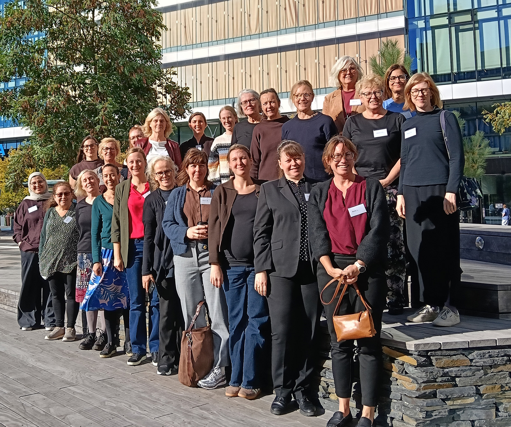

Annual meetings
- Coordinated updates on collaborative studies
- Development of clinical and research protocols
- Scientific exchange and mentorship for junior researchers
- Structured feedback from patient research partners
A collaborative initiative of researchers, physicians and nurses across Sweden to advance research and improve outcomes for people with ANCA-associated vasculitis.
About the network Meet the membersAnti-neutrophil cytoplasmic antibody (ANCA)-associated vasculitides (AAV) are severe, relapsing-remitting autoimmune diseases associated with high morbidity and increased mortality. Current treatments rely heavily on broad immunosuppression, which carries substantial risks such as severe infections. There is a clear clinical need for safer, more targeted treatment strategies, standardized follow-up routines and a more uniform national care structure.
AAV are rare (prevalence 200–400 per million), so Swedish clinics manage small and heterogeneous patient cohorts. This leads to fragmented clinical practice, limited opportunities for methodologically robust studies, and difficulty translating research advances into consistent care. A coordinated national research and clinical network is therefore essential, both for scientific understanding and for standardized clinical management.
The network will deliver clinically relevant research collaboration and concrete, implementable outputs for Swedish rheumatology and nephrology.
Annual in-person meetings, starting in autumn 2026, serve as focused workshops. Regular online coordination keeps the work moving between meetings.
SweVasc brings together physicians, nurses, researchers and a patient research partner from Gothenburg, Karolinska Institutet, Linköping, Lund, Umeå, Uppsala and Örebro.
Imtithal Al Azzawi
Specialist physician and PhD student, nephrology
Lund University and Skåne University Hospital, Lund
Beatrice Alderin
Resident physician and PhD student, rheumatology
Karolinska Institutet and Center for Rheumatology, Stockholm
Aleksandra Antovic
Senior consultant and associate professor, rheumatology
Karolinska Institutet and Karolinska University Hospital
Mikael Brink
Resident physician and assistant professor, rheumatology
Umeå University and Norrland University Hospital, Umeå
Sara Brolin
Nurse and PhD student
Karolinska Institutet and Karolinska University Hospital
Annette Bruchfeld
Senior consultant and professor, nephrology
Linköping University and Linköping University Hospital; Karolinska Institutet and Karolinska University Hospital
Janice Bärtzner
Patient research partner
Johanna Dahlqvist Network organizer
Specialist physician and associate professor, rheumatology
Uppsala University and Uppsala University Hospital
Maria Eriksson Svensson
Senior consultant and professor, nephrology
Uppsala University and Uppsala University Hospital
Martina Frodlund
Senior consultant and associate professor, rheumatology
Linköping University and Linköping University Hospital
Annika Granath
Nurse and PhD student
Örebro University and Västmanland Hospital Västerås
Iva Gunnarsson
Senior consultant and adjunct professor, rheumatology
Karolinska Institutet and Karolinska University Hospital
Peter Hemmingsson
Associate senior consultant and PhD student, nephrology
Karolinska Institutet and Karolinska University Hospital
Anna Juto
Specialist physician and PhD student, rheumatology
Karolinska Institutet and Karolinska University Hospital
Ann Knight
Senior consultant and associate professor, rheumatology
Uppsala University and Uppsala University Hospital
Anna Levin
Specialist physician and postdoctoral researcher, nephrology
University of Gothenburg and Sahlgrenska University Hospital
Hanna Lindberg
Specialist physician and PhD student, rheumatology
Uppsala University and Uppsala University Hospital
Vivianne Malmström
Professor of rheumatological immunology
Karolinska Institutet
Sophie Ohlsson
Senior consultant and associate professor, nephrology
Lund University and Skåne University Hospital, Lund
Elli Panayi
Specialist physician, rheumatology
Örebro University Hospital
Susanne Pettersson
Nurse and associate professor
Karolinska Institutet and Karolinska University Hospital
Rille Pullerits
Senior consultant and associate professor, rheumatology and clinical immunology
University of Gothenburg and Sahlgrenska University Hospital
Annika Söderbergh
Senior consultant and postdoctoral researcher, rheumatology
Örebro University and Örebro University Hospital
Klytaimnistra Voudouri
Senior consultant and PhD student, nephrology
Uppsala University and Uppsala University Hospital
Karin Wadström
Resident physician and postdoctoral researcher, rheumatology
Karolinska Institutet and Center for Rheumatology, Stockholm
Maria Weiner
Specialist physician and postdoctoral researcher, nephrology
Linköping University and Linköping University Hospital
Elisabet Welin
Nurse and professor
Örebro University

SweVasc held its first in-person meeting, bringing together researchers, physicians and nurses from across Sweden to start the collaboration.
The participating centres have collaborated for several years. A selection of resulting publications:
The SweVasc network is funded by Svensk Reumatologisk Förening (the Swedish Society for Rheumatology).
Network coordination: Johanna Dahlqvist, Uppsala University